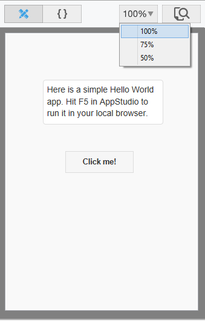
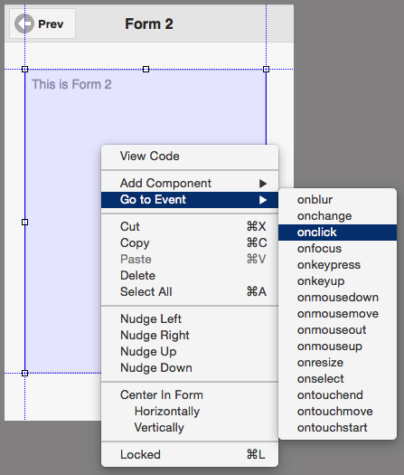

Design Screen
Jump to navigation
Jump to search
{kind=link}

The Design Screen shows the layout of the form. A control that is outlined in blue is the control being edited. It can be moved or resized using the grab handles on the edges.
- When you mouse down on a control, lines extend to the edges to help with positioning.
- If Size to Grid is selected in the Format menu, edges of controls will be positioned to the nearest multiple of 4. This also makes it much easier to position controls so they look attractive.
- Certain controls have a fixed size, or have their size determined by their properties. These controls will not be able to be resized.
- Controls can be added to the Design Screen by drag & drop or by double clicking on the control in the Toolbox. They can also be added by right clicking on the form and selecting “Add Component”.
- Multiple controls can be selected and moved together.
- To view the code, right click and select View Code, or double click outside a control.
- To group controls in a container, see the Container control.
- Use the Zoom button to reduce the size of the display. The form can be displayed at 75% or 50% of its full size. Drag and drop are disabled when the form is not at 100%.
Right click Options
{kind=link}

- To go to the event code for a control, right click on it and select “Go to Event”.
- The controls on a form can be locked, which means that they will no longer be draggable on the Design Screen. This protects again accidental changes.
Next: Project Explorer